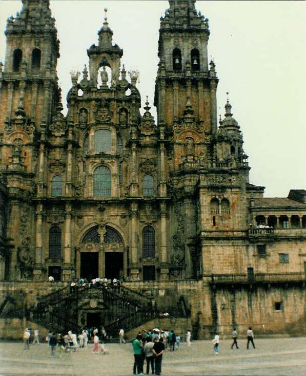

Inter Rail 1986 Day 4
Tuesday 26th August 1986

Woke up at 10.00am to find the comparment completely empty of people. Jon and Roger had both moved to their own
private compartments. and Eli was washing. We did start to have breakfast but the train arrived in La Coruña in the middle of it.
Checked on train times and decided on a strategy. As La Coruña turned out to be a relatively grotty seaside port we didn't explore much of it.
We bought some stamps (as in France, you get them from the Tabac) and had a coffee and a Coke and a quick walk around town. The local orange
pop is called Revoltas!
The train to Santiago de Compostela was a small 2nd class stopper but was very smooth and had immaculate loos. Got asked by a local lad all
bout Intertail and how it worked.
Arriving in Santiago de Compostela we had to run the gauntlet of several old men/women intent on making us use their accommodation. We managed
to avoid them but still had the perennial problem of finding a decent place to stay.
Two addresses given by the Interrail bible were already full. Whilst contemplating this fact we got talking to a couple of lasses. One was a
medical student in Copenhagen, the other an English lass originally who was going to be a medical student in Geneva. She was obviously the
product of a finishing school.
We wandered about and got ourselves a free map from a very expensive and full hostel. Found ourselves a hostel one marked CH. Ended up on the
1st floor with balconies with views of the cathedral in the part of the town denominated as a national monument. Jon and Roger had one room,
Eli and I another for 500PS each.
The cathedral was extremely ornate. The organ pipes were huge and equally ornate. There were numerous side chapels and large chandeliers. The
main altar is dominated by a statue of St. James with riveting eyes.
Two unusual aspects to the cathedral. A casket containing some remains of St. James is kept underneath the altar (in the same place as St.
Peter in the Vatican) plus the back of the St. James statue at the altar was being kissed frequently.
Headed off for a tortilla sandwich and a wander round town. Passed a cinema advertising Star Wars, The Empire Strikes Back, Return of the Jedi,
Stallone in Cobra, plus The Sound of Music.
In the student quarter there were loads of clothes and jewellry being sold. In yet another square with gardens, Roger bought himself a bag of
popcorn.
Headed back to our rooms, changed into slightly warmer clothing and planned our route for the next few days. For evening meal, Roger had the
825ps meal whilst Eli had the 725ps version.
Jon and I had a bowl of soup (just like cawl) and an absolutely wonderful paella between the two of us. Headed straight back to our rooms to
get a good nights sleep, setting the alarm for 8.00am
{kind=link}